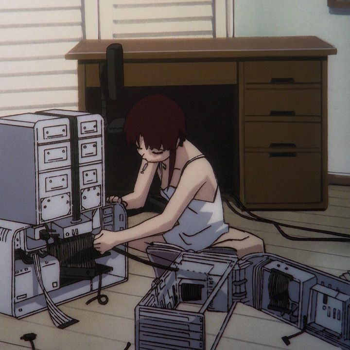
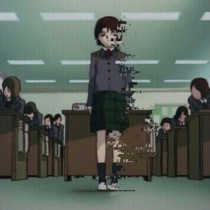
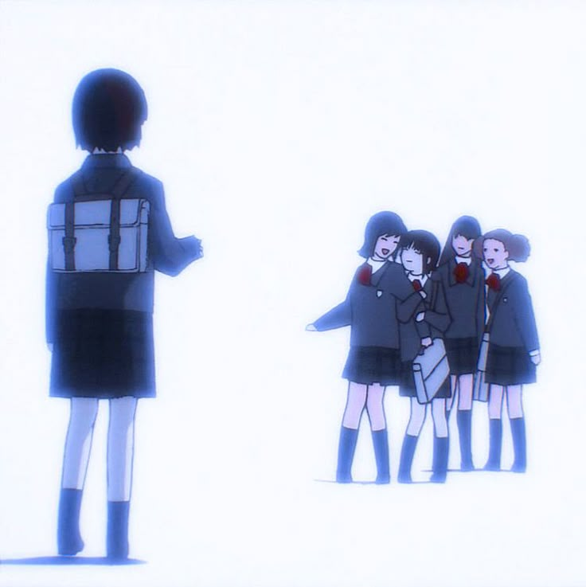
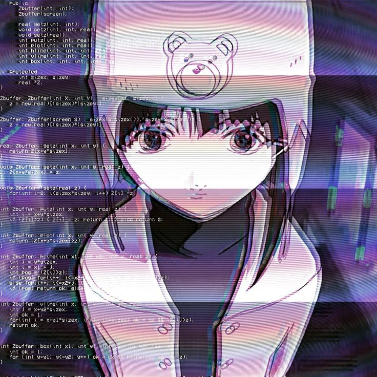
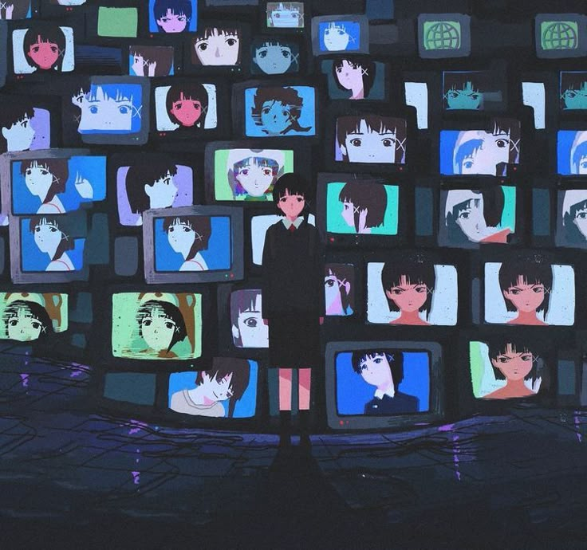
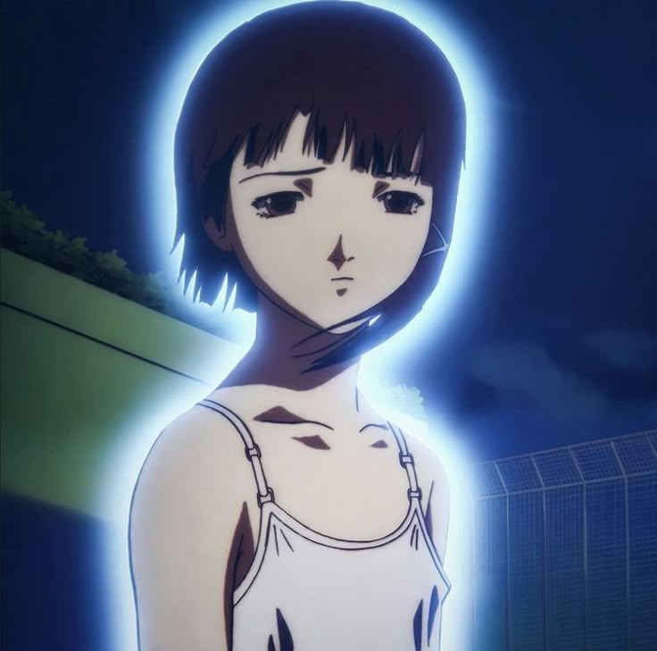
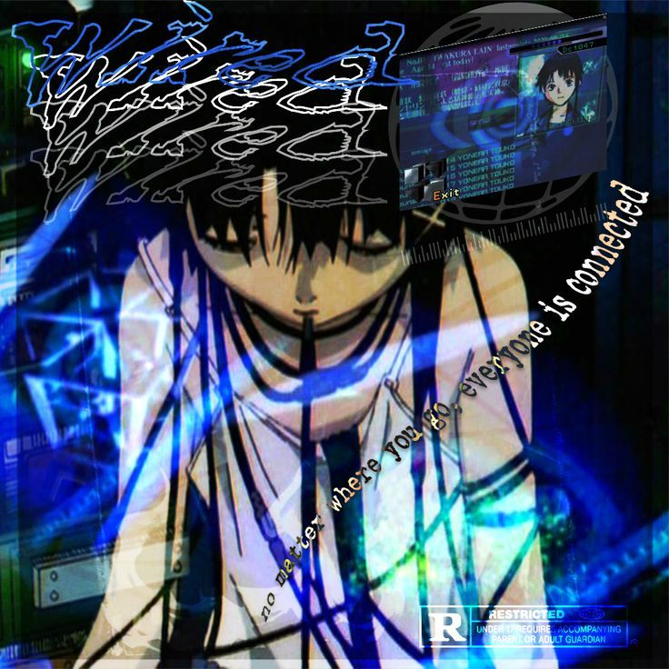
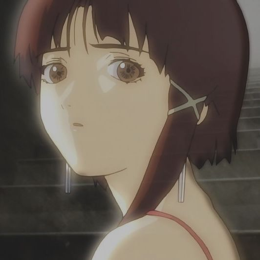

About the Anime
Serial Experiments Lain is a psychological and philosophical anime that explores identity, reality, and technology. The story follows Lain Iwakura, a teenage girl who becomes involved in the mysterious virtual world known as "The Wired".
Main Character
Lain Iwakura – A quiet and introverted girl who begins to question her reality as she gets deeper into The Wired.
Gallery








Themes and Concepts
The anime explores deep themes such as the nature of reality, the impact of technology on human identity, loneliness, and connection in the digital age. It raises questions like: Who are we in a world where the virtual and real blend together?
Memorable Quotes
- "No matter where you go, everyone's connected."
- "I am Lain. I am... me."
- "People only have substance within the memories of others."